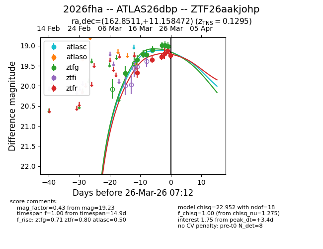
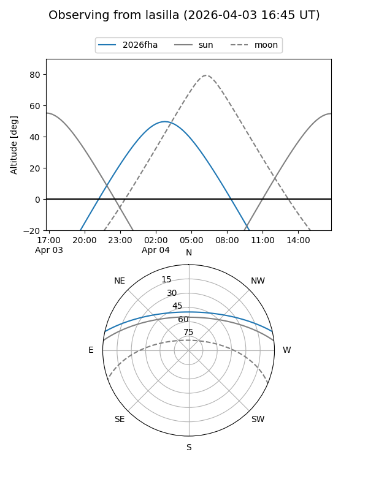
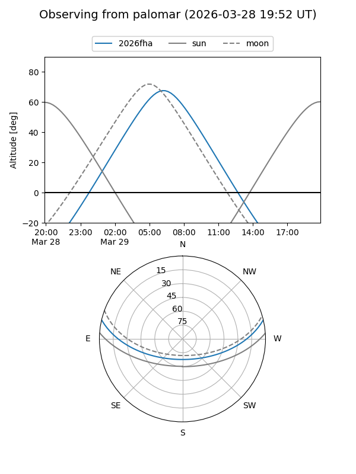
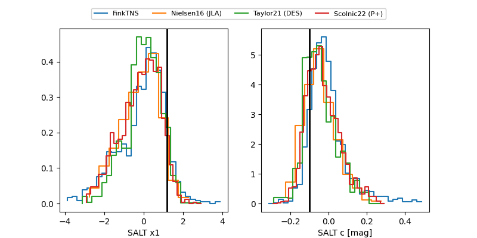

2026fha
Target 2026fha at 2026-03-26 07:14
Aliases and brokers:
FINK: link
Lasair: link
ALeRCE: link
TNS: link
YSE: link
alt names
ZTF26aakjohp (ztf,fink_ztf)
2026fha (tns,yse)
ATLAS26dbp (atlas)
Coordinates:
equatorial (ra, dec) = 162.8511,+11.15847
equatorial (HMS+DMS) = 10:51:24.26,+11:09:30.50
galactic (l, b) = (236.6096,+57.60356)
Flags:
Photometry:
last atlasc=19.12, ztfg=19.02, ztfr=19.23
1 atlasc, 8 ztfg, 6 ztfr detections
Lightcurve

Visibility


Additional plots
